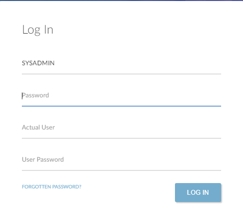

SYSAdmin Login
The SYSAdmin login is a special login to that is given special administrator rights so that any function in the system can be run. It also has additional super-user powers that can be used to correct certain issues and can be given temporary designer capability to allow the UI to be modified.
It has historically been used by as a support login on most clients' systems, as it provides access to all functions. In the past, some clients have expressed concern that the SYSAdmin user could not always be identified for audit purposes.
now logs the actual user who is logging in as SYSAdmin at the point of login so that they can be identified. Only users who are set up as administrators can log in as the SYSAdmin user.
How It Works
When you log in to as SYSAdmin you will be required to identify and authenticate an additional user ID and password and this will be logged for future identification of activity by SYSAdmin.
Login Screen
When you login to you are presented with a login screen to identify your user ID and password.
If you enter SYSAdmin as the user ID, an additional >Actual User ID and >Password field will appear.

You will need to enter the SYSAdmin password in the first >Password field, and then your own user ID and password in order to gain access to the system as SYSAdmin. The actual user ID used cannot be SYSAdmin; it must be another active licensed user.
In the Current Users, the login record that is created as a result of the SYSAdmin login also identifies the actual user used. This is shown as the user ID of the actual user, following the IP address.
The User Logging {Enquiry} for the SYSAdmin user (in Users) also shows the user ID of the actual user.
The title bar still shows the login as SYSAdmin; this will be the user that is recorded against, for example, batch records, audit records, and report requests. If required it will be possible to cross reference the record in question with the creation time and this to identify the actual user that made the change.
Configuration
In general, all users who are allowed to log in using the SYSAdmin user ID must be listed in the Administrators field in Module/ Maintenance.

Support Users
Normally the actual user ID used for a SYSAdmin login needs to be a licensed user but employees are able to log in without this being necessary. As part of the upgrade process for v10.22 a "coins" user ID is created (if it does not already exist). This is marked as a non-licensed user (Named User: N) so that it does not take up a named user .
Clients may wish to set up actual user records for employees. This is possible by removing the generic "coins" user (if required) and creating users as required. Each of these users should not be set as a named user, which prevents them from being used to access the system, but with a group code of "root" so that they can be used to allow a SYSAdmin login.